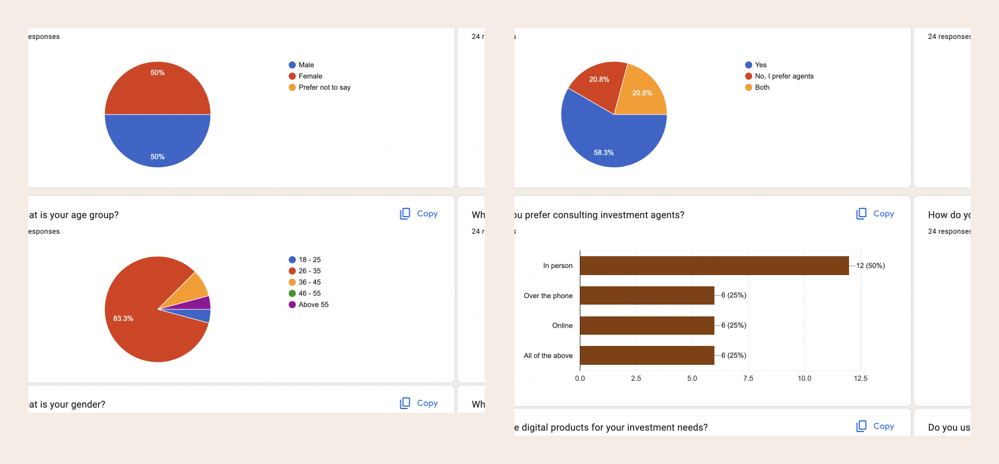
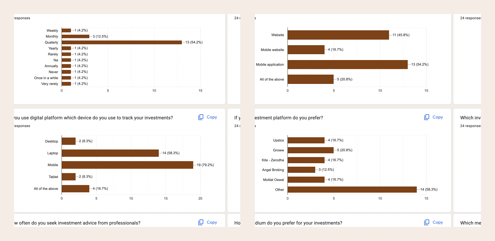
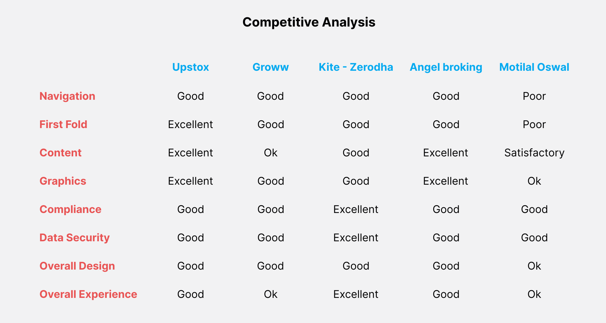
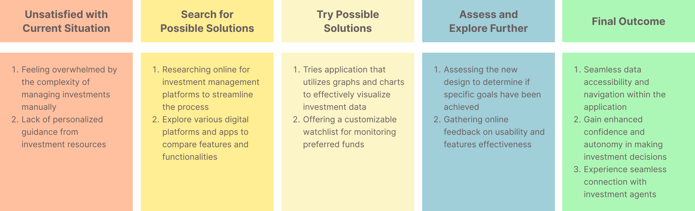
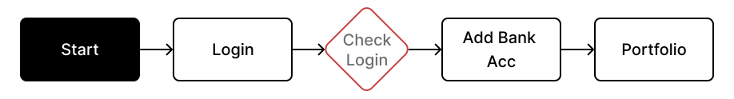
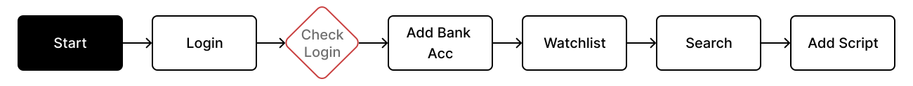
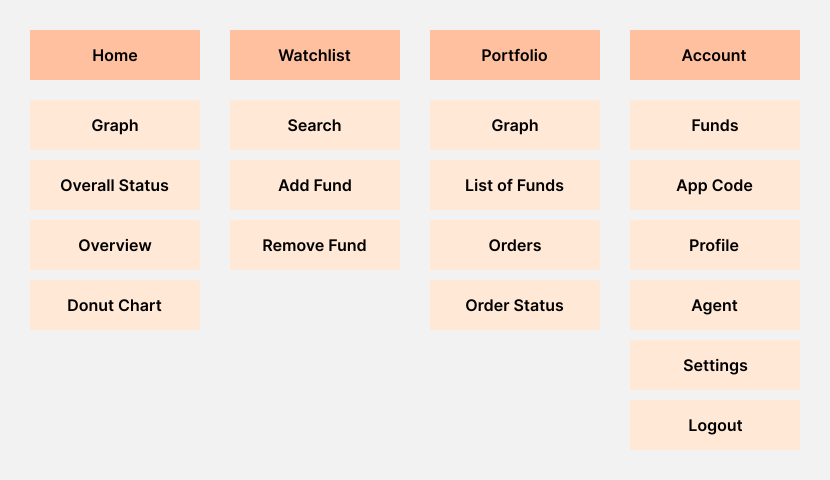
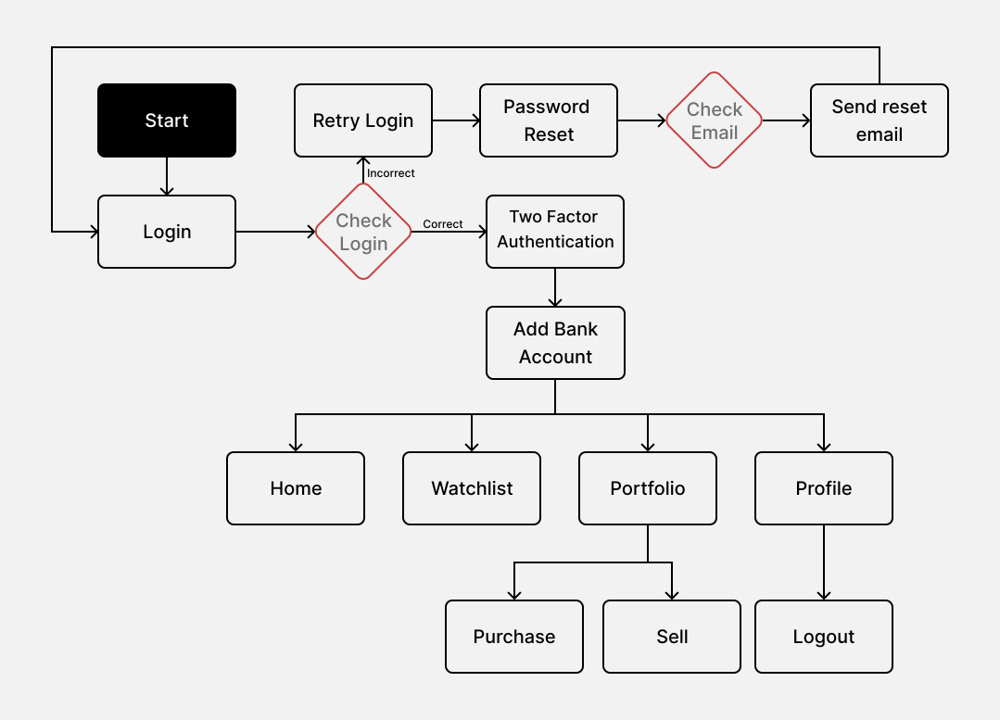
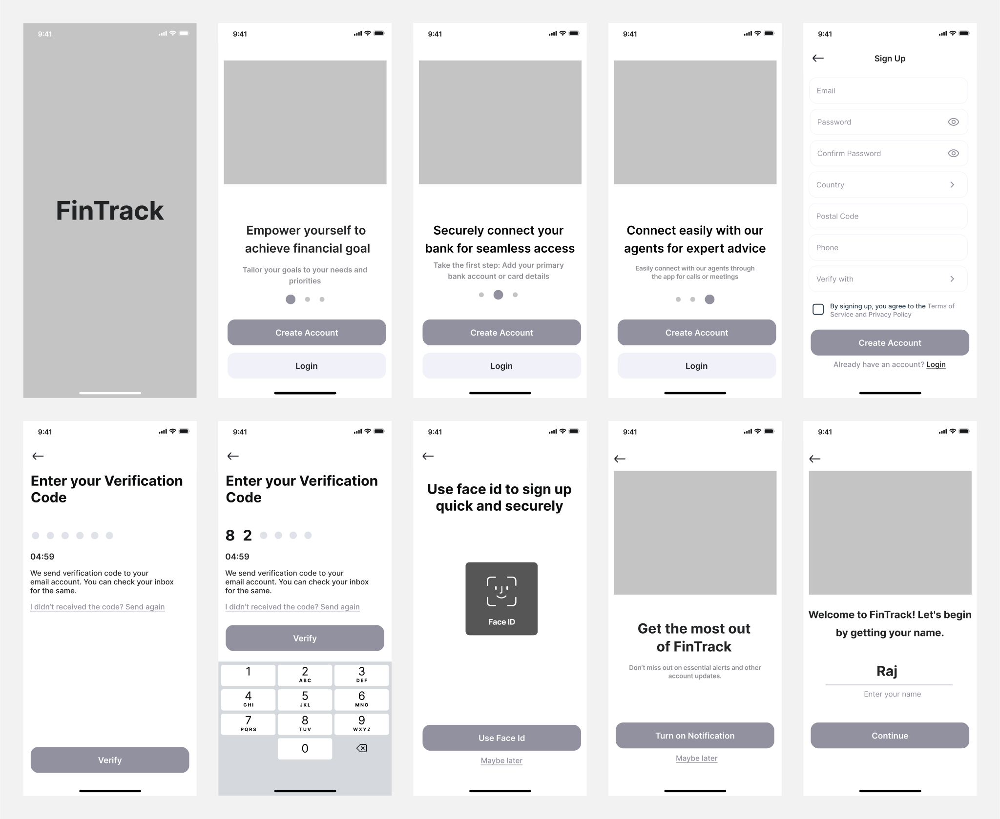
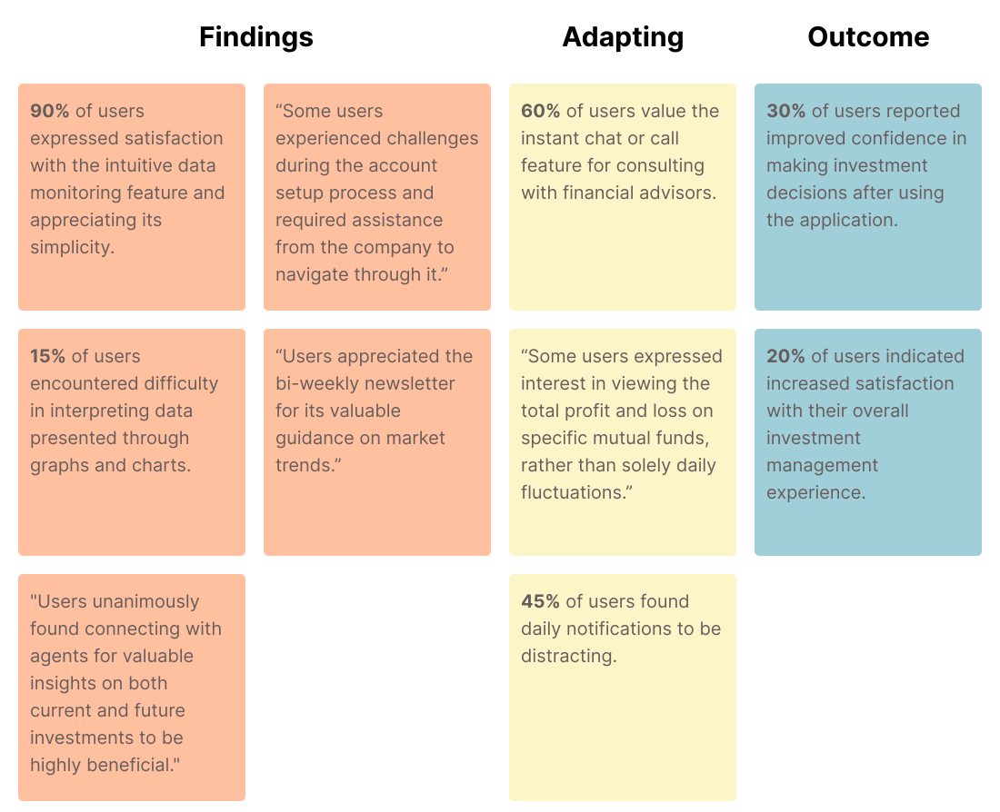

Let's connect
Let's connect

Pizza on the Rock
This application is designed to empower restaurant owners to take control of their delivery operations and customer interactions. By addressing high commission fees, ad charges, and inefficiencies of third-party services. It ensures a seamless and cost-effective experience for both the business and its customers. This app enables direct access to consumer data for personalized upselling and resolves issues of rider unavailability during peak hours.
Project
Pizza on the Rock
Role
UX Designer / Researcher
Timeline
January 2024 → June 2024
Platform
Mobile App → IOS & Android
Tools
Figma, Teams
Pizza on the Rock provides a comprehensive suite of features for restaurant owners, including real-time order tracking, seamless customer communication, and personalized promotions based on consumer data. The app ensures a smooth and cost-effective delivery experience by eliminating high commissions and additional charges imposed by third-party services. Leveraging extensive user research and market analysis, I played a pivotal role in the design and development process, collaborating closely with the restaurant owner, project managers, and engineers to bring Pizza on the Rock to fruition.
In this project, I assumed a key role in the end-to-end design and development of the Pizza on the Rock app. I initiated the project by conducting in-depth user research and market analysis to understand the unique challenges faced by restaurant owners and their customers. I collaborated closely with the restaurant owner, project managers, and engineers to develop a user-centric design that addressed these pain points. Throughout the project, I was responsible for creating wireframes, high-fidelity prototypes, and conducting usability tests to ensure the app met user needs and provided an exceptional user experience. My focus was on delivering a solution that not only streamlined delivery operations but also enhanced customer satisfaction and business efficiency.
01
Empathize User Research User Survey Competitive Analysis
02
Define Persona Journey Map
03
Ideate User Flow Crazy 8
04
Design Wireframes Prototypes
05
Evaluate A/B Testing Iterative Design
Restaurant owners face significant challenges with delivery apps like Swiggy and Zomato, including high commission, additional fees for users, and poor handling and delivery timing, which reflect negatively on their business. Furthermore, they lack access to consumer data, limiting customer interaction and up-selling opportunities. During peak times, these platforms may take restaurants offline or struggle with rider availability, exacerbating issues and forcing owners to comply with unfavourable terms.
üëâ Dealing with third-party overheads like high commissions, delivery inefficiencies, and lack of customer data access
Developing Pizza on the Rock will eliminate high commission fees and additional charges while ensuring efficient delivery operations. The app enables direct customer communication and personalized promotions, enhancing engagement and satisfaction. This user-friendly platform streamlines the delivery process, offering a superior user experience and operational efficiency.
üöÄ Pizza on the Rock streamlines delivery, reduces costs, and enhances engagement


I conducted user survey in order to understand users’ pain points when they use an investment application. Research reported that it was difficult to get financial advice from agents to broaden their knowledge about investments resulting in missed opportunities. Having a way to quickly connect with their agents and make informed decisions.
I conducted a comprehensive user survey to gain deeper insights into my target audience and assess competing digital platforms in the market. This process illuminated key pain points and user requirements, providing valuable perspective for product development.
 
I also did competitive analysis to assess competing digital platforms in the market. I identified weaknesses in existing platforms, enabling strategic refinement of our product to address user needs more effectively.
A notable 78% of clients exhibited hesitancy in making informed investment decisions, resulting in missed opportunities.
Approximately 65% of clients expressed a preference for a streamlined application enabling them to monitor their investments, supplemented with graphical representations to easily discern profit or loss statuses.
After conducting extensive user research, we gained invaluable insights that informed the refinement of our user personas. Among the key findings, we discovered that users universally sought an overview of their investments. Additionally, some users expressed a desire for quick consultations with agents prior to decision-making, while others prioritized the ability to manage multiple scripts and investments within a single platform. Armed with this data, we tailored our application's features to directly address both user and business needs.
A journey map was carefully crafted leveraging insights gained from thorough research and comprehensive personas. By delving into their pain points, we strategically hypothesized and mapped out a sequence of events, paving the way for potential solutions to emerge.
The initial user flow was created to address specific pain points identified through thorough user research. Through iterative design processes, we identified and refined a primary user flow tailored to meet the core objectives of the application.
I would like to view comprehensive statistics for my portfolio, including the profit and loss metrics for each individual fund.
I would like to connect with agent for better guidance.
I would like to have list of customizable watchlist.
I employed quantitative user research method primarily to help us structure content and identify navigation patterns based on user preferences. By organizing information this way aligns with users’ mental models, and ensures that content is easily accessible and findable for them.
After developing personas and mapping out the user journey, the next step was to create an architecture for the application. This foundational flow outlines the primary functionality of the application, serving as a blueprint for further design iterations and refinements as we progress.
As we transitioned into the design phase, I began sketching initial mockups to visualize the user flow and interface elements. These early sketches allowed us to explore different layout options and iterate on design concepts to ensure alignment with user needs and preferences.

After creating a basic outline on paper, I moved on to create low-fidelity wireframes using Figma. The wireframes allowed me to refine the design further, providing a more concrete representation of the overall layout, structure, and functionality of the app. By creating wireframes, I was able to experiment with different design elements and test the usability of the interface before investing time and resources into a more high-fidelity design.
After completing the low-fidelity wireframes, I progressed to high-fidelity prototypes. These prototypes aimed to enhance the design visually while maintaining the core functionality and user experience. With detailed visuals and interactive elements, the prototypes provided a realistic representation for user testing and validation before development.

After conducting user testing sessions involving 35 participants, I led a card sorting activity to analyze and extract recurring themes and insights from their feedback, fostering a collaborative approach to discern user preferences and needs.
The application's streamlined interface led to a 40% increase in user confidence. According to feedback from early users like Priya Arora, "Navigating through the app feels effortless, making managing investments a breeze.” The revamped design resulted in a 25% decrease in user errors, enhancing overall usability.
This project emphasized the critical role of collaboration and communication among cross-functional teams. Throughout this project, I honed my skills in user research and usability testing methodologies. Conducting user interviews, usability tests, and analyzing feedback allowed me to gain a deeper understanding of user needs and preferences, guiding design decisions effectively.